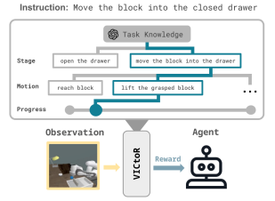
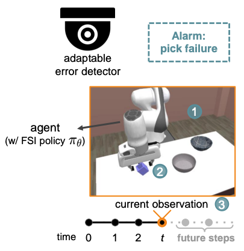

|
Pang-Chi (Sean) Lo
I am a senior undergraduate student majoring in Computer Science and Information Engineering at National Taiwan University. I am advised by Prof. Winston H. Hsu and Prof. Tsung-Wei Ke. My primary research interests lie in robot learning, robotic perception, and digital twins.
Email /
Google Scholar /
Github /
LinkedIn
|
|
|

|
VICtoR: Learning Hierarchical Vision-Instruction Correlation Rewards for Long-horizon Manipulation
Kuo-Han Hung*, Pang-Chi Lo*, Jia-Fong Yeh*, Han-Yuan Hsu, Yi-Ting Chen, Winston H. Hsu
ICML 2024 workshop: Aligning Reinforcement Learning Experimentalists and Theorists
paper
Existing Vision-Instruction Correlation (VIC) reward models struggle with training for long-horizon tasks. We propose VICtoR, a new reward model for long-horizon robotic reinforcement learning that assigns rewards hierarchically.
|
|

|
AED: Adaptable Error Detection for Few-shot Imitation Policy
Jia-Fong Yeh, Kuo-Han Hung*, Pang-Chi Lo*, Chi-Ming Chung, Tsung-Han Wu, Hung-Ting Su, Yi-Ting Chen, Winston H Hsu
NeurIPS 2024
paper
The novel adaptable error detection (AED) problem is formulated for monitoring few-shot imitation policies' behaviors, and we propose PrObe to address the challenging problem by learning from the policy's feature representations.
|
|
|
Data Engineer Intern, Genenet Technology Ltd. UK
Jul. 2024 - Nov. 2024
Selected in Talent Circulation Alliance Taiwanese Talent Outbound International Internship.
Deployed genetic sequence service and developed video-based cariac organoid beating detection.
|
|
|
Web Software Developer & Data Analyst, StatsInsight
May. 2022 - Jun. 2024
Developed a website for Taiwanese baseball data visualization, advanced analysis, and scouting purpose.
Provided data analysis service for teams in the Chinese Professional Baseball League (CPBL) and the Chinese Taipei National Baseball Team in World Baseball Classics 2023.
|
Website template is adapted from here.
|
|